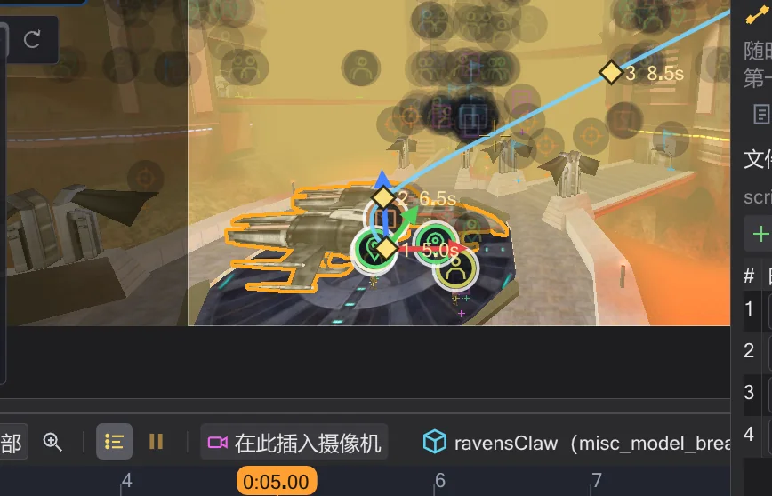

实体
地图中脚本能够操作的一切——角色、行走目标、摄像机标记、触发器、飞船——都是实体。可以选择、修改、移动,也可以放置新的实体。

实体列表#
左栏把实体分组——摄像机标记、行走目标、注视目标、角色、脚本启动器、特效、声音、可移动物体、可破坏物体、NPC 路径点。眼睛图标可在视图中隐藏某组(Alt+单击:只显示该组),搜索框按名称或类别筛选。单击选择,双击飞过去,右键为其插入命令:行走目标、注视目标、affect 块、摄像机移到此标记。
在视图中选择#
单击标记、角色或模型即可选择;Ctrl/Shift+单击追加;在空白处拖出框可选择框内所有对象。悬停时显示边框和名称。地图下方的控制栏会显示所选实体在脚本中被使用的次数,并提供跳转到这些行的按钮。
移动与旋转#
视图角落的小工具栏在 移动 和 旋转 之间切换操纵器。移动模式下,可在地面上拖动实体或沿彩色箭头拖动;工具栏中设置的网格会吸附,拖动时按 Ctrl 可暂时关闭——未设置网格时,Ctrl 让箭头拖动吸附到 8 单位。旋转模式下显示圆环(Ctrl:15 度一步):蓝色左右旋转;飞船和模型还有绿色(俯仰)和红色(翻滚);角色只有蓝色圆环,因为游戏对角色只认 angle。Alt+拖动会先复制。多个选中的实体作为整体移动和旋转。



检查器#
列表下方的检查器显示所选实体:来自游戏代码的类别说明、名称、位置、地面(脚离地面的高度——陷入地面时显示红色)和 朝向 (度),生成标志以复选框显示,其余所有键以字段显示。脚本字段带有 打开,NPC_type 可搜索游戏中的所有 NPC。图标栏可以飞过去、放到地面、复制、删除、制作动画(移动物体动画与 ROFF 文件)以及显示 全部键 (原始)。鼠标位于地图或列表上时,实体的修改有独立的撤销记录。
放置新实体#
视图左边缘的图块用于放置常见类型:角色、行走目标、摄像机/注视标记、注视目标、脚本启动器、特效、声音、NPC 路径点、玩家出生点。单击图块,再在视图中单击——或把图块拖进视图;按住 Shift 可连续放置。列表上方的 + 实体 和视图中的右键菜单(在此新建实体)提供所有类别。网格按钮可吸附到 8、16、32 或 64 单位。